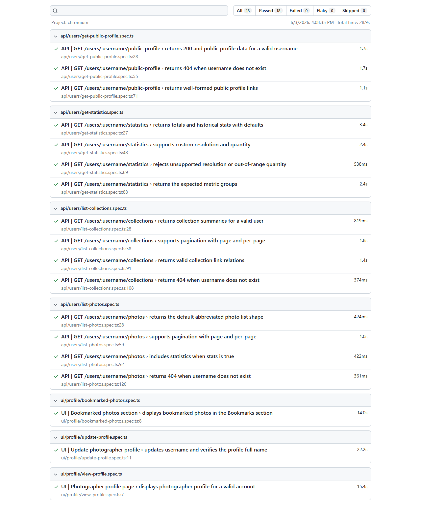
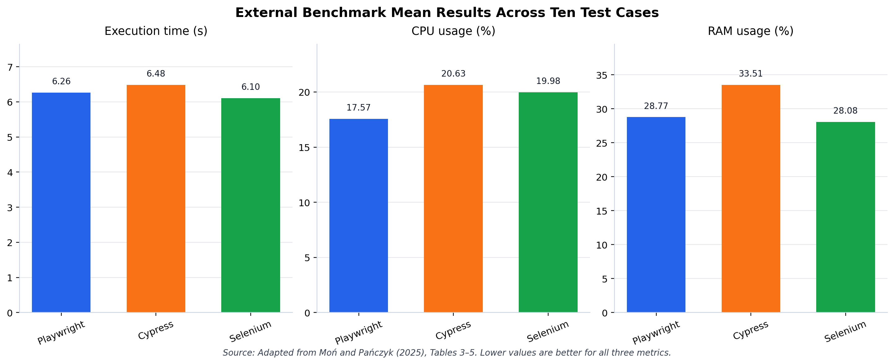
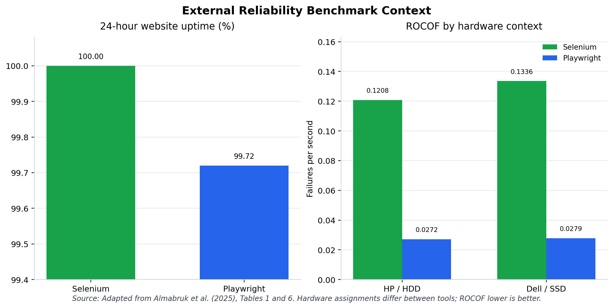

A Comprehensive UI and API Automation Testing Framework Using Playwright
Presented byLe Tiep Tuyen
Student ID22020015
SupervisorDr. Le Dinh Dung
▸ [~15s] Good morning/afternoon. My name is Le Tiep Tuyen, and today I will present my graduation project: a comprehensive UI and API automation testing framework built using Playwright and TypeScript. This work was completed under the supervision of Dr. Le Dinh Dung.
Overview
Table of Contents
01
Background, problem statement, and research objectives
02
Proposed framework design
03
Implementation on the selected system
04
Verified evaluation results and tool comparison
05
Limitations and future work
▸ [~20s] In the next fifteen to twenty minutes, I will walk through the problem this project addresses, the design of the proposed framework, how it was implemented, the verified evaluation results from a real test run, and finally the limitations and future work.
Background · Testing Approaches
Manual Testing and Automated Testing Approaches
Dimension
Manual Testing
Automated Testing
Execution
Human tester performs the steps
Tool executes predefined scripts
Judgment
Strong for exploration and usability
Limited to encoded assertions
Evidence
Tester notes, screenshots, informal reports
Logs, reports, traces, structured results
Maintenance
Knowledge may remain informal
Scripts require updates when behavior changes
Cost pattern
Lower initial technical setup
Higher initial setup, reusable over repeated runs
▸ [~45s] Before describing the specific problem this project addresses, it is worth being precise about what automation actually changes relative to manual testing — they are complementary approaches, not competitors. Drawing on ISTQB testing theory and Garousi and Mantyla's review of automation practice, the literature identifies five methodological dimensions where they diverge: execution, judgment, evidence, maintenance, and cost pattern, as shown here. This framing sets up exactly when automation is worth building.
Background · Automation Value
Automation Value Relative to Manual Testing
Dimension
Manual Testing
Automation in This Framework
Repeatability
Depends on the tester following steps consistently
A single command re-executes the same checks identically
Speed & evidence
Repeated navigation, informal time/notes
18 tests in 28.890057s — JUnit XML + HTML report
Human judgment
Strong for exploration, usability, discovery
Limited to the implemented, encoded flows
Risk
Human error during repetitive execution
Scripts can become stale if not maintained
Table 5.7 from the thesis, condensed for the selected regression scenarios in this framework.
▸ [~45s] Automation research identifies exactly two problems it is meant to solve: making regression checks repeatable, and producing evidence that can be reviewed later instead of relying on a tester's memory. This framework demonstrates both concretely — the verified run I will present later completed all eighteen checks in 28.890057 seconds, producing a structured JUnit XML file and an HTML report. I want to be precise: this project did not measure how long the same eighteen checks would take manually, so I am not claiming a speed multiplier — that comparison stays qualitative. What the evidence does show is that manual judgment remains essential, which automation does not replace, and that automated scripts carry their own maintenance risk — exactly the problem the next slide introduces.
Background & Problem
Problem Statement
01
Manual regression checks repeat navigation, data entry, and result verification every run, which is effortful and inconsistent.
02
Sustainable automation requires reusable framework abstractions that improve separation of concerns, reduce duplication, and support long-term test-code maintainability.
03
Without a deliberate, maintainable design, a single UI change can force edits across many scattered files, undermining maintainability and reuse.
This research addresses the problem of designing, implementing, and evaluating a maintainable framework that supports both end-to-end FE UI-level and API-level regression checks.
▸ [~35s] Manual regression checks must repeat navigation, data entry, and result verification every time the application changes — this is effortful and prone to inconsistency, and it does not scale as scenarios multiply. Sustainable automation is not automatic either: it requires reusable framework abstractions that improve separation of concerns, reduce duplication, and support long-term test-code maintainability — without that design discipline, the effort simply moves from manual repetition to script maintenance. Underlying both points is a design problem: without a deliberate, maintainable structure, a single UI change can force edits across many scattered test files, costing time and undermining long-term reuse. This is the problem this research addresses: designing, implementing, and evaluating a maintainable framework that supports both end-to-end FE UI-level and API-level regression checks.
Research Objectives
Research Objectives
01
Analyze how a Playwright and TypeScript framework can structure UI and API automation in a maintainable way.
02
Design and implement reusable framework abstractions that reduce duplication and support long-term maintainability.
03
Evaluate the implemented framework using verified execution evidence, HTML reporting, and JUnit XML output.
04
Identify limitations and future work related to coverage, scalability, reliability, and evaluation depth.
▸ [~30s] This research has four objectives, each tied to one research question. First, analyze how a Playwright and TypeScript framework can structure UI and API automation for a modern web application in a maintainable way. Second, design and implement reusable framework abstractions that reduce duplication and support long-term maintainability. Third, evaluate the implemented framework using verified execution evidence, including HTML reporting and JUnit XML output — this evaluation strand also includes positioning Playwright against Cypress and Selenium, presented later in the evaluation chapter. Fourth, identify the limitations and future work that remain after implementation and evaluation.
Literature Review · End-to-End Testing Methodology
End-to-End Testing Methodology
01
End-to-end tests validate an integrated, user-facing flow, but broad or poorly isolated scenarios become costly and fragile.
02
Flaky tests are a major risk, commonly caused by asynchronous waits, environment dependency, and unstable test data.
03
API-level checks complement browser-oriented end-to-end tests by validating service boundaries closer to the interface.
The framework targets representative, stable flows rather than exhaustive end-to-end coverage.
▸ [~30s] End-to-end tests validate an integrated, user-facing flow across the relevant parts of a system, but the literature is clear that they must be selected carefully: broad or poorly isolated end-to-end scenarios can become costly and fragile. Flaky tests are a major risk in this context — a test that passes or fails inconsistently without a corresponding product change reduces trust in automated results, and research identifies common causes such as asynchronous waits, environment dependency, test-order dependency, and unstable test data. For this reason, API-level checks can complement browser-oriented end-to-end tests by validating service boundaries closer to the interface, rather than placing all automated confidence in the browser suite. This is why the framework, presented next, targets representative, stable flows rather than exhaustive end-to-end coverage.
Literature Review · Tool Capability
Playwright Capabilities and Selection Rationale
Capability
What it addresses
Auto-waiting and actionability checks
Reduces reliance on fragile, timing-based waits for dynamic UI
Web-first, auto-retrying assertions
Confirms expected state without manual retry logic
Fixtures with isolated test setup
Provides reusable, type-safe objects per test through test.extend()
Built-in API request contexts
Combines UI and API automation in one framework
Built-in HTML/JUnit reporting and trace viewer
Produces reviewable execution evidence
Playwright is the only candidate offering all five capabilities natively; the full weighted comparison against Cypress and Selenium follows in the evaluation chapter.
▸ [~40s] These are the specific Playwright capabilities that justify the tool choice for this framework, each grounded in official Playwright documentation. Auto-waiting and actionability checks reduce reliance on fragile, timing-based waits for dynamic UI. Web-first, auto-retrying assertions confirm expected state without manual retry logic. Playwright's fixture system, through test.extend(), provides reusable, type-safe objects with isolated setup per test — this is the same fixture mechanism the framework design relies on, shown next. Built-in API request contexts mean UI and API automation live in one framework rather than two separate toolchains. And built-in HTML and JUnit reporting, plus the trace viewer, produce reviewable execution evidence without extra tooling. Playwright is the only one of the three candidate tools offering all five natively — the full weighted comparison against Cypress and Selenium, backed by independent published benchmarks, follows later in the evaluation section.
Framework Design · Overall Architecture
Overall Framework Architecture
Every layer depends only on the layer directly below it. A change in one place cannot break the entire suite.
▸ [~35s] This is the overall architecture. At the top, test specifications express intent — what scenario is being verified. Below that, Page Objects encapsulate UI interaction, and workflows compose reusable business flows such as login. API services centralize endpoint logic. Underneath, core utilities handle browser and API request management, while data objects, constants, and configuration keep structured values out of the tests themselves. Every layer above depends only on the layer directly below it — this is what keeps a change in one place from breaking the entire suite.
Framework Design · UI Abstraction
UI Abstraction Design: The Page Object Model Concept
A test calls a Page Object method; only the Page Object needs to change when the page's HTML changes.
▸ [~30s] For the UI layer, this project applies the Page Object Model. A test never talks to a locator directly — it calls a method on a Page Object, such as "update profile name." That method owns the locator strategy and the browser interaction, and returns control to the test for assertion. If the page's HTML changes, only the Page Object needs to change — every test that uses that method keeps working unmodified. This is the core mechanism that makes UI tests maintainable as the application evolves.
A custom fixture injects reusable Page Objects, workflows, and a shared runtime context into every test.

Figure 3.6 — Fixtures inject reusable Page Objects, workflows, and a shared runtime context into every test
▸ [~30s] Rather than every test constructing its own Page Objects and browser context, this framework uses Playwright's fixture system for dependency injection. A custom fixture prepares eight reusable objects — page objects like the Home, Login, Profile, and Account pages, plus the Login workflow — and injects them directly into the test function. A shared runtime context also exposes the browser page, browser context, and API request context to framework utilities after initialization. This removes repeated setup code from every single test file.
Framework Design · API Automation
API Automation Design: Service-Layer Abstraction
Endpoint logic is centralized in service classes, keeping API tests focused on scenario logic rather than request construction.

Figure 3.7 — Endpoint logic centralized in service classes, not duplicated in test files
▸ [~25s] On the API side, endpoint construction and request logic are centralized in service classes — for example, a Users Service and a Photos Service — rather than duplicated inside each API test. These services use a shared API utility for GET, POST, PUT, and DELETE requests, and Data Transfer Objects define the shape of requests and responses. This keeps API tests focused on scenario logic, not on how to build a URL or attach headers.
Framework Design · Test Data & Cleanup
Test Data and State Management Design
Centralized test data and DTOs separate scenario logic from environment-specific values; API-based cleanup restores state after UI actions.

Figure 3.8 — Centralized test data/constants; API-based cleanup restores state after UI actions
▸ [~30s] Test data, endpoint constants, and configuration values are centralized rather than hardcoded inside tests. For state-changing UI scenarios — such as updating a profile name — the framework uses an API call after the test to reset that data, so the next test run starts from a known state. This supports repeatability, though I want to be precise: this evidence covers the mechanism working correctly in the runs performed, not a long-term reliability guarantee.
Framework Design · Automation Support Workflow
Copilot Agentic-AI Workflow Design for Automation Testing
This workflow reflects design intent. Its productivity effect has not been quantitatively measured in this research.

Figure 3.12 — Test-case design, script generation, and code review support
▸ [~30s] One additional project feature is worth mentioning: a Copilot Agentic-AI workflow that supports automation development — helping design test scenarios, generate Playwright scripts consistent with this framework's conventions, and review generated code before it is accepted. I want to be explicit that this is a support tool for writing automation code, and its productivity effect has not been quantitatively measured in this research — it is presented as an implemented feature, not as a performance claim.
Implementation · Scope
Implemented Test Scope
Suite
Scenarios
Spec files
Tests
UI
Profile view, profile update, bookmarked photos
3
3
API
Public profile, statistics, photos, collections
4
15
Built on Unsplash as the selected demonstration system, a real, modern web application with both a browsable UI and a documented public API.
▸ [~30s] In implementation, the framework was applied to Unsplash as the selected demonstration system — a real, modern web application with both a browsable interface and a documented public API. Three UI test scenarios were implemented: viewing a photographer's profile, updating a profile, and bookmarked photos. Fifteen API test scenarios were implemented across four specification files, covering the public profile, user statistics, user photos, and user collections endpoints — all built through the service-layer design just described.
Evaluation · Verified Execution Results
Verified Test Execution Results: Full-Suite Summary
Test suite
Tests
Passed
Failed
Skipped
Duration
API tests
15
15
0
0
—
UI tests
3
3
0
0
—
Full suite
18
18
0
0
28.890057s
Table 5.5 from the thesis, reporting the verified local run invoked with npx playwright test, evidenced by JUnit XML, the terminal log, and the HTML report.

Figure 5.1 — Playwright HTML report, verified 3 June 2026 full-suite run
▸ [~35s] This is the evidence that matters most: a verified local full-suite run, invoked with npx playwright test, recorded fifteen API tests and three UI tests, all passing — for a full-suite total of eighteen tests, eighteen passed, zero failed, zero skipped, in 28.890057 seconds according to the JUnit XML output. This matches the Playwright HTML report shown here and reproduces Table 5.5 from the thesis exactly. This is one verified run, presented as exactly that: concrete evidence that the implemented framework executes correctly end-to-end, not a claim about long-term reliability across many runs.
Evaluation · Verified Execution Results
Verified Test Execution Results: Per-Specification Breakdown
Specification file
Type
Tests
Failures
Skipped
Time
tests/api/users/get-public-profile.spec.ts
API
3
0
0
4.466s
tests/api/users/get-statistics.spec.ts
API
4
0
0
8.782s
tests/api/users/list-collections.spec.ts
API
4
0
0
4.405s
tests/api/users/list-photos.spec.ts
API
4
0
0
2.254s
tests/ui/profile/bookmarked-photos.spec.ts
UI
1
0
0
13.963s
tests/ui/profile/update-profile.spec.ts
UI
1
0
0
22.199s
tests/ui/profile/view-profile.spec.ts
UI
1
0
0
15.399s
Table 5.6 from the thesis. Every specification file passed with zero failures and zero skipped tests.
▸ [~35s] Breaking that down by specification file — this reproduces Table 5.6 from the thesis. The four API specification files covered the public profile, statistics, collections, and photos endpoints, each completing in under nine seconds. The three UI specification files covered bookmarked photos, profile update, and profile view, each completing in under twenty-three seconds. Every single specification file passed with zero failures and zero skipped tests — this is the complete, granular evidence behind the full-suite summary on the previous slide.
Evaluation · Tool Selection Criteria
Tool Selection Criteria and Capability Comparison
Dimension
Playwright
Cypress
Selenium
Browser & platform
Chromium, Firefox, WebKit
Chrome, Firefox, Edge (experimental WebKit)
Broad WebDriver coverage
Synchronization
Actionability / auto-waiting
Retryability for queries/assertions
Explicit / implicit waits
API support
Built-in API testing & request contexts
cy.request() HTTP requests
Needs additional libraries
Reporting & debugging
Built-in HTML/JUnit + trace viewer
Screenshots, videos, configurable reporters
Depends on integrations
Eleven project-specific criteria (Table 5.2), grounded in official Playwright, Cypress, and Selenium documentation.
▸ [~35s] Before presenting numbers, it matters how the comparison was framed. Chapter 5 of the thesis defines eleven project-specific criteria — weighted from one to five — covering browser engine coverage, synchronization reliability for dynamic UI, combined UI-and-API support in one framework, TypeScript and Page-Object-Model architecture fit, reporting and trace artifacts, and CI-readiness, each grounded in official Playwright, Cypress, and Selenium documentation. The capability comparison shows Playwright is the only one of the three offering built-in UI and API support with integrated reporting and tracing without extra assembly — Cypress covers HTTP requests via cy.request(), and Selenium's API testing typically requires additional libraries.
Evaluation · Weighted Framework Evaluation
Weighted Framework Evaluation
Score category
Playwright
Cypress
Selenium
Primary subtotal (7 criteria)
150
128
107
Secondary subtotal (4 criteria)
52
49
49
Total (out of 205)
202 (Rank 1)
177 (Rank 2)
156 (Rank 3)
Project-specific rubric (Table 5.4), reflecting fit for this project rather than a claim of universal superiority.
▸ [~40s] Translating that qualitative comparison into a defensible decision, the eleven weighted criteria were applied as a scoring rubric — this is Table 5.4 from the thesis. Playwright scores 202 out of a possible 205 points, Cypress scores 177, and Selenium scores 156. I want to state clearly that this is a project-specific rubric I constructed, not an independent empirical benchmark — but the gap is driven specifically by the primary, architecture-critical criteria: combined UI-and-API support, synchronization reliability, and TypeScript/Page-Object-Model fit, where Playwright scores highest. Selenium remains competitive on secondary criteria such as ecosystem maturity. This ranking should be read as project fit, not universal superiority.
Evaluation · External Benchmark
External Benchmark Context: Execution Time, CPU, and RAM Usage

Figure 5.2. Source: Adapted from Moń and Pańczyk (2025), Tables 3–5. Independent academic evidence, not this project's own measurement.
▸ [~35s] To go beyond my own rubric, the thesis also brings in independent, published evidence. This chart, adapted from Moń and Pańczyk (2025), reports mean execution time, CPU usage, and RAM usage for the same three tools across ten repeated test cases — Tables 3 to 5 of their paper. The pattern is one of trade-offs, not one tool dominating everywhere: in their study, Selenium recorded the lowest execution time and RAM usage, while Playwright recorded the lowest CPU usage and stayed close to Selenium on the other two metrics. I present this as external context confirming that tool choice is a trade-off among resource dimensions, not as a measurement this project produced itself.
Evaluation · External Benchmark
External Benchmark Context: Reliability Over a Twenty-Four-Hour Period

Figure 5.3. Source: Adapted from Almabruk et al. (2025), Tables 1 and 6. Independent academic evidence, not this project's own measurement.
▸ [~35s] A second external study, Almabruk et al. (2025), adds a reliability dimension: over a twenty-four-hour observation window, Selenium reached full uptime while Playwright reached 99.72 percent uptime — yet Playwright's rate of occurrence of failures, or ROCOF, was lower across the hardware contexts they reported. Because hardware assignments differed between tools in parts of that study, I present this cautiously — as reinforcing that tool selection is a genuine trade-off among reliability, speed, resource use, and architectural fit, not as a verdict that one tool is unconditionally best. Combined with my own rubric and the verified execution result from this project, this is the evidence base supporting Playwright as the right choice for this framework specifically.
Limitations & Future Work
Limitations and Future Work
Limitations
What the evidence does not cover
Single verified run — not long-term reliability data
Representative scope — not full Unsplash coverage
Qualitative + external-benchmark tool comparison, not a local Cypress/Selenium run
External live-system dependency risk
Copilot workflow effectiveness not yet measured
Future work
Where this points next
CI/CD integration for repeated automated runs
Expanded coverage + stronger schema validation
Non-functional testing
Historical trend reporting across multiple runs
▸ [~40s] I want to be direct about the boundaries of this work. The evidence covers one verified local run, not long-term reliability data. The UI and API coverage is representative of common scenarios, not the complete Unsplash surface. The Playwright/Cypress/Selenium comparison rests on my own weighted rubric plus two external published studies — Cypress and Selenium were not locally executed against this specific system. Because tests target a live external system, external dependency remains a risk, though it was not observed as a failure in the verified run. And the Copilot Agentic-AI workflow's effectiveness has not been quantitatively evaluated — I state that clearly rather than assume it. For future work, this points directly to CI/CD integration for repeated automated runs, expanded coverage with stronger schema validation, non-functional testing, and historical trend reporting across multiple runs.
Thank you.
Questions & Discussion
▸ [~25s] In conclusion, this research designed and implemented a layered Playwright and TypeScript automation framework for UI and API testing, demonstrated it on Unsplash as a real system, and verified with a concrete execution run that it works end-to-end. Beyond that, the evaluation chapter shows — through a weighted project-specific rubric and two independent published benchmarks — that Playwright is the best-fitting tool for this framework's combined UI-and-API, TypeScript-based design, while being explicit about what remains outside the current evidence. Thank you to my supervisor, Dr. Le Dinh Dung, and to the committee for your time and attention. I welcome your questions.